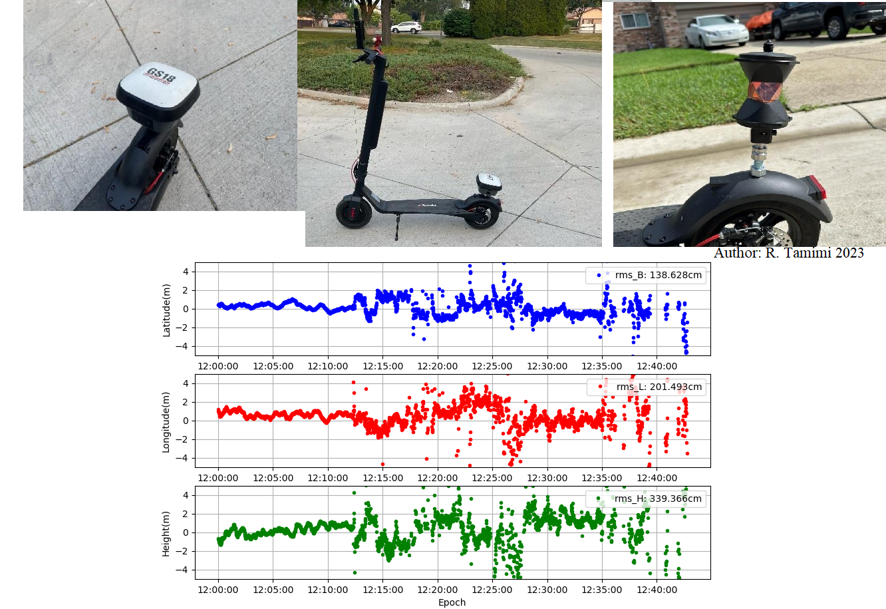

E-scooter positioning in urban environments
Information Link to heading
Chair/professorship: Geosensors and Engineering Geodesy (GSEG)
Supervisor: Prof. Dr. Andreas Wieser
Advisor: Matej Varga
Suitable for: BSc/Mc/Master project
Number of students per group: 1-4
Maximum number of groups 1
Abstract Link to heading
E-scooters in cities rely on sensors for positioning which can only provide 3-10 meters accuracy. Many applications require sub-meter accuracy in real time. Installing expensive, high-quality hardware on large number of e-scooters is costly and impractical. Additional challenges impacting accuracy are urban environments (multipath, signal interruptions) and vehicle dynamics (frequent stops, direction changes, speed variations). A question is how to improve the positional accuracy of e-scooters. One of the possible solutions is to equip them with smartphones which can collect raw multi-frequency multi-constellation GNSS data, as well as data from other sensors such as gyro, accelerometer and magnetometer.
During the project, students will perform theoretical and experimental work to improve e-vehicle positioning accuracy, ideally to the 1-meter level. The theoretical part will focus on identifying and implementing the state-of-the-art processing algorithms for GNSS data and sensor data fusion (INS/Kalman Filter, factor graph optimization, and machine learning). To assess the accuracy, and reliability of the trajectories students will conduct extensive field tests in various locations within the City of Zurich, including open spaces, streets with buildings, and areas with sparse tree cover. Furthermore, to assess the impact of different speeds on data quality, experiments using different speeds will be conducted. Reference measurements will be collected using a geodetic-grade GNSS receiver and robotic total station. They will allow independent assessment and fine-tuning of the smartphone-based positioning system.
The project will be conducted in collaboration with the office of Geomatics + Surveying of the City of Zurich (GeoZ). After the semester, there is a possibility for continuation of the project.
